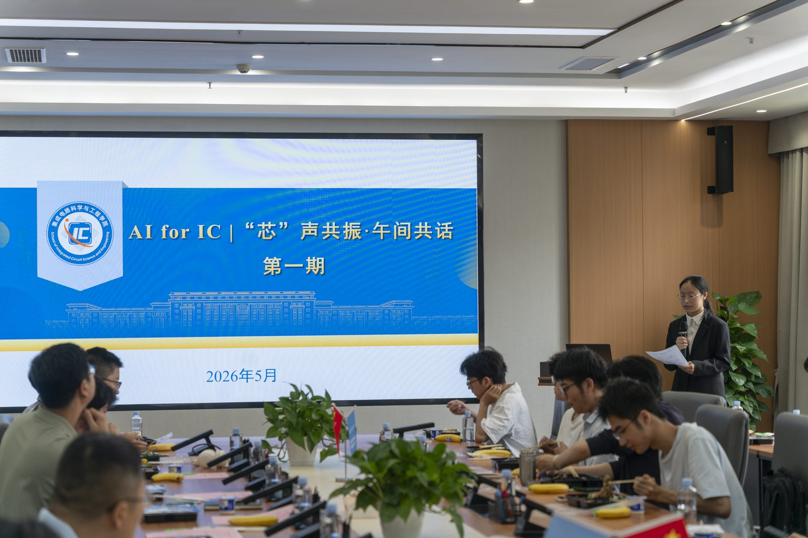

AI for IC
VOL. 01
芯沙龙
从一个问题开始AI × IC
已结束
第一期芯沙龙 · 圆满举行
首期芯沙龙「芯」声共振·午间共话在成电国际创新中心举办，同步成立 AI 芯动力工作室。孔谋夫教授分享从 LLM 到 Agent 与 Skill 的实践路径，40 余名学生参与交流。
查看活动详情电子科技大学 · AI for IC 社区
让 AI 成为手中的工具，让想法走向真实的项目。
从第一次使用 Agent，到一起探索集成电路。
带上好奇心，和我们一起动手。

成电国际创新中心 B511
关于社团
AI 芯动力 · UESTC AIC 是 集成电路科学与工程学院（示范性微电子学院） 的 AI for IC 开放技术社区。 我们从 AI 工具应用出发，探索人工智能与集成电路的交叉实践。
三件事：让工具真正用起来、一起走进 IC 的世界、把经验留给下一个人。 落点就是芯沙龙、项目组，以及这个持续更新的网站。
了解我们的组织选题策划 · 技术交流 · 嘉宾联络
活动组织 · 社群运营 · 对外联络
视觉宣传 · 资料整理 · 知识沉淀
主席团负责方向、资源与跨组协调 · 项目孵化机制 · 计划设置 2 名项目协调者
项目实践
项目孵化方向 · 欢迎跨组参与
围绕实际需求，探索 Agent 工作流、个人网站和 AI 辅助学习。
围绕人工智能与集成电路的交叉问题，共同选题、学习和验证想法。
项目组开放给非正式成员，职能部门成员也可以跨组参与。
学习资源
FPGA 学习
面向动手实践的 FPGA 接口与电路学习笔记，从引脚、时序到常见外设，边做边查。
sintherain.github.io微电子笔记
模拟电路、数字设计、信号与系统等微电子方向的学习笔记，适合课后对照复习。
corele-one.github.io工程化的技能框架，给出技能拆分与开发流程方法论，适合团队沉淀可复用的自动化能力。
官方 Agent Skills 仓库，示范如何把领域知识写成模型可加载的技能包，可仿写 EDA 相关技能。
官方 MCP 服务器合集，把文件、数据库、命令行等能力接给大模型，适合搭建科研自动化助手。
Microsoft 开源课程，从基础概念讲到动手搭建，适合作为第一次接触 Agent 的系统入口。
微软的多智能体对话框架，支持角色分工与工具调用，适合搭建互相审查的设计或验证智能体。
用状态图编排多步智能体流程的框架，适合把仿真、综合、验证串成可自动迭代的流水线。
加入我们
对 AI 或 IC 感兴趣，就从这里开始。项目组、活动筹备、内容策划都需要人。